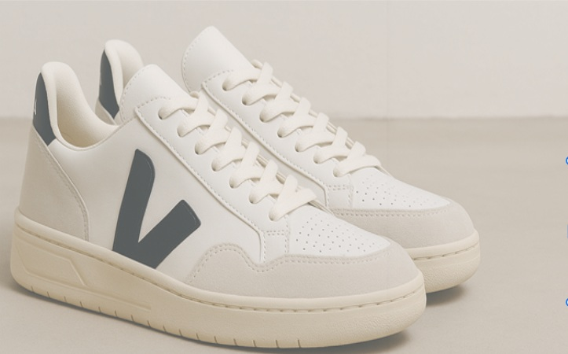

VEJA’s shoebox
Explore how box size and cardboard sourcing affect the packaging of a pair of trainers.
Start the camera to scan the sneaker photo.
Point your camera at the sneaker photo on the VEJA slide. Keep the entire photo in view.
Meet VEJA
VEJA is a French sneaker brand that uses organic cotton and wild Amazonian rubber. Its kraft shoeboxes are FSC-certified.
Get the sneaker photo
Print this image or display it on a second screen.

Download the markerChoose the packaging
The trainers need to arrive protected. Which design would you try first to reduce empty space and filler?
Check the cardboard
VEJA reports that its kraft shoeboxes are FSC-certified. For your own packaging, ask the supplier for its FSC certification details and verify the recycled content separately.